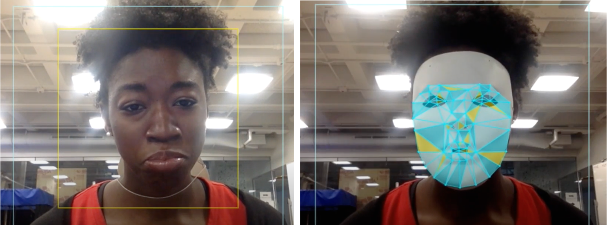

5 인공지능과 사회불평등
이정현 (중앙대학교 인문콘텐츠연구소)
5.1 들어가며
2020년을 전후하여 경제협력개발기구(Organization for Economic Cooperation and Development, OECD), 유럽연합(European Union, EU), 유네스코(United Nations Educational, Scientific and Cultural Organization, UNESCO) 등을 비롯한 국제기구들이 인공지능 윤리기준을 발표하기 시작했고, 한국 역시 비슷한 시기에 과학기술정보통신부와 정보통신정책연구원이 함께 작업한 국내 인공지능 윤리 기준을 발표하였다. 모든 국제기구 및 국가의 인공지능 윤리 기준은 조직 및 국가의 성격과 맥락에 따라 조금씩 다르지만 공통적으로 다루고 있는 보편원칙들이 몇 가지가 있다. 그 중 하나가 인공지능이 야기할 수 있는 사회 불평등을 지양하고 감소시키는 방향으로 인공지능을 구현해야 한다는 점이다.
예를 들어, OECD가 신뢰가능한 인공지능을 구현하기 위해 제시한 5가지 원칙 중 첫 번째는 “포용성장, 지속가능한 발전, 복지 증진의 지향(Inclusive growth, sustainable development, and well-being)”인데, 구체적인 내용은 소수 집단 및 사회적으로 소외된 집단을 포용하고 경제적 차별, 사회적 차별, 성차별 등의 불평등을 감소시키는 방향으로 인공지능을 구현해야 한다는 것이다(OECD, 2019). EU가 제시한 신뢰가능한 인공지능을 위한 윤리원칙 역시 “다양성, 차별금지, 공정성(Diversity, non-discrimination and fairness)”에 대한 내용이 5번째 원칙으로 직접적으로 제시되고 있으며(European Commission, 2019), 한국의 인공지능 윤리기준이 제시하는 10가지 원칙 중 3번째도 “다양성 존중”이다(과학기술정보통신, 2020).
아래 <표 1>은 주요 국제기구 및 국내 인공지능 윤리 기준이 사회 불평등에 대한 윤리 원칙을 어떻게 설명하고 있는지 해당 내용을 발췌하여 정리하고 있다.
<표 1> 주요 국제기구 및 국내 인공지능 윤리기준 중 사회 불평등 관련 원칙
| 조직 및 기관 | 내용 |
|---|---|
| OECD (Principles on AI, 2019) | 1. Inclusive growth, sustainable development and well-being: “Stakeholders should proactively engage in responsible stewardship of trustworthy AI in pursuit of beneficial outcomes for people and the planet, such as augmenting human capabilities and enhancing creativity, advancing inclusion of underrepresented populations, reducing economic, social, gender, and other inequalities, and protecting natural environments, thus invigorating inclusive growth, sustainable development and wellbeing.” |
| European Commission (Ethics Guidelines for Trustworthy AI, 2019) | 5. Diversity, non-discrimination and fairness: In order to achieve Trustworthy AI, we must enable inclusion and diversity throughout the entire AI system’s life cycle. Besides the consideration and involvement of all affected stakeholders throughout the process, this also entails ensuring equal access through inclusive design processes as well as equal treatment. This requirement is closely linked with the principle of fairness. |
| UNESCO (Recommendation on the Ethics of AI, 2021) | Fairness and non-discrimination AI actors should promote social justice and safeguard fairness and non-discrimination of any kind in compliance with international law. This implies an inclusive approach to ensuring that the benefits of AI technologies are available and accessible to all, taking into consideration the specific needs of different age groups, cultural systems, different language groups, persons with disabilities, girls and women, and disadvantaged, marginalized and vulnerable people or people in vulnerable situations…AI actors should make all reasonable efforts to minimize and avoid reinforcing or perpetuating discriminatory or biased applications and outcomes throughout the life cycle of the AI system to ensure fairness of such systems. Effective remedy should be available against discrimination and biased algorithmic determination. Furthermore, digital and knowledge divides within and between countries need to be addressed throughout an AI system life cycle, including in terms of access and quality of access to technology and data, in accordance with relevant national, regional and international legal frameworks, as well as in terms of connectivity, knowledge and skills and meaningful participation of the affected communities, such that every person is treated equitably |
| 과학기술정보통신부 (사람이 중심이 되는 인공지능 윤리기준, 2020) | ③ 다양성 존중 - 인공지능 개발 및 활용 전 단계에서 사용자의 다양성과 대표성을 반영해야 하며, 성별·연령·장애·지역·인종·종교·국가 등 개인 특성에 따른 편향과 차별을 최소화하고, 상용화된 인공지능은 모든 사람에게 공정하게 적용되어야 한다. - 사회적 약자 및 취약 계층의 인공지능 기술 및 서비스에 대한 접근성을 보장하고, 인공지능이 주는 혜택은 특정 집단이 아닌 모든 사람에게 골고루 분배되도록 노력해야 한다. |
<표 1>에서 볼 수 있듯이 사회 불평등을 지양하는 인공지능 윤리는 인공지능 기술이 야기할 수 있는 사회 불평등을 최소화하고, 기술이 주는 혜택이 공정하게 분배되며, 모두가 기술을 동등하게 사용할 수 있는 권한과 능력이 주어질 수 있도록 인공지능 기술을 운용할 것을 제안하고 있다. 국내외 모든 인공지능 윤리기준이 사회 불평등에 대한 우려를 공통적으로 명시하고 있다는 사실은 인공지능 기술이 사회 불평등을 야기하거나 증가시킬 가능성이 있다는 데 이견이 없음을 보여준다. 사실상 우리는 기계학습이 산업의 영역에서 다소 급진적이고 실험적으로 도입되는 과정에서 기술을 개발하고 도입하던 당시에 품었던 장밋빛 전망과는 달리 사회 불평등이 예상치 못하게 가시화되는 것을 경험하고 목격해 왔다. 이런 경험은 국내외에 인공지능 기술을 설계하고, 만들고, 적용하는 데 ‘윤리적’ 지침이 필요함을 직시하게 했고 사회적으로도 그 필요에 대한 절대적인 동의를 얻어 왔다.
인공지능 기술은 왜 사회 불평등에 대한 논의에서 자유로울 수 없을까? 우리는 꽤 오랫동안 ’인공지능’이라는 용어를 사용해왔지만 사실상 이 용어가 지칭하는 기술은 시대에 따라 달랐다. 지금 우리가 부르는 인공지능 기술은 사실상 패턴을 인식하는 알고리즘에 의해 작동하는 기계학습(machine learning)을 지칭하는데 이 기술은 사실상 인공적이지도 않고 지능적이지도 않다. 인공적이지 않다는 뜻은 기술이 작동하기 위한 모든 것이 물질적 자원과 인간의 물질적인 노동에 기반하고 있다는 의미이며, 지능적이지 않다는 것은 대규모 데이터 집합에서 찾아낼 수 있는 패턴을 인식하고 따르는 것일 뿐 별다른 지적 능력이 없다는 의미이다(Crawford, 2021). 그런데 인공적이지도 않고 지능적이지도 않은 이유 때문에 인공지능 기술은 필연적으로 우리가 살고 있는 사회적, 문화적, 정치적 맥락 위에 놓여 지며, 같은 이유로 끊임없이 사회 불평등을 만들고, 드러내고, 증폭시킨다. 인공지능을 구현하는 물질적 자원과 인간의 물질 노동은 언제나 불평등하게 설계되고 분배되며, 기계학습 알고리즘이 읽어내는 데이터의 패턴이라는 것은 어떤 것이 알고리즘이 읽어낼 만한 패턴으로 읽혀지고 어떤 것은 패턴이 될 수 없는지 선택하고 분류하는 불평등한 관계를 내재하고 있다.
때문에 인공지능 기술이 신경망 기술과 통계적 패턴 인식 기술의 발전에 따라 점차 정교해지는 동안 우리는 인공지능 기술을 사회적, 문화적, 역사적으로 바라보며 “무엇이 누구를 위해 최적화되고 누구에게 결정권이 있는지” 물어야 할 필요가 있다(Crawford, 2021). 즉, 이 장에서 인공지능의 사회 불평등 문제를 다루는 방법은 지금 우리가 살고 있는 시대의 인공지능 기술이 ‘누구를 위해’ 최적화되어 개발되었으며, 그것을 결정한 집단이 ‘누구인지’ 묻는 과정이다.
5.2 불평등한 개발
앞서 <표 1>에 정리한 국내 인공지능 윤리원칙은 인공지능 기술의 개발 및 활용의 전 단계에서 사용자의 다양성을 반영하고 편향을 최소화해야 한다고 기술하고 있다. 유럽연합에서 발표한 인공지능 윤리 원칙은 이를 좀 더 상세히 기술하는데 인공지능 시스템에 사용되는 훈련데이터 및 운영 데이터 세트가 포함하고 있는 역사적 편향이 특정 그룹이나 사람들에게 의도적, 비의도적 차별이나 편견을 유발할 수 있기 때문에 데이터를 수집하는 단계에서부터 식별 가능한 수준의 편향을 최대한 제거하고, 알고리즘이 개발된 후에도 지속적인 관리와 감독을 통해 투명하게 관리할 것을 권고하고 있다.
이는 인공지능과 사회 불평등을 이야기할 때 가장 보편적으로 언급되고 있는 ’데이터 편향’의 문제이다. 알고리즘을 훈련하는 데이터 자체에 성별, 연령, 인종, 지역, 신체 능력, 종교, 국가 등의 사회적 특성이 편향된 수로 존재하고, 알고리즘은 편향된 분배를 인식 가능한 패턴의 일부로 읽어내는 것이다. 일례로 2014년 미국의 전자상거래 기업 아마존(Amazon)은 매 해 쏟아지는 수 만장의 채용지원서를 검토하는 절차를 축소하기 위해 입사 지원자를 빠르게 필터링하는 인공지능 채용 시스템을 도입했다. 입사 지원자를 필터링하는 방식은 기계학습의 기본 원칙에 따라 지금까지 아마존에 10여 년간 축적된 지원자 및 합격자 데이터를 바탕으로 이력서에 나타나는 5만 여개의 단어를 인식하도록 훈련된 알고리즘이 합격자의 패턴을 익혀 지원자 중 상위 5명을 뽑아내는 방식이었다. 수만 개의 지원서 중 소수의 채용 후보자만 걸러낸다는 애초의 목표는 알고리즘이 성공적으로 달성해내었지만 알고리즘이 데이터를 방식으로 후보자를 걸러내는 방식은 여성 지원자에게 매우 불리한 방식으로 이루어졌다. 정보기술 기업 종사자의 고질적인 성비 불균형을 알고리즘은 채용을 위한 데이터의 패턴으로 학습했고, 이에 따라 여성 동아리를 나왔거나 여자 대학을 나오는 등 지원자의 성별을 ’여성’으로 짐작할 수 있는 경우 감점이 이루어지는 등 시스템이 매우 체계적으로 여성 지원자를 차별하는 결과를 보여주었다. 아마존의 인공지능 채용시스템과 마찬가지로 이미지를 인식하는 알고리즘 역시 사회의 여러 영역에 적용되어 인간에 의해 수동으로 분류되어야 하는 많은 양의 이미지 자료를 쉽고 빠르게 처리해줄 것이라는 기대를 불러왔다. 실제로 미국국가기술표준원(The National Institute of Standards and Technology, NIST)이 2019년에 자발적으로 자사 알고리즘을 제출한 미국의 99개 기업의 189종류 이미지 인식 알고리즘이 몇 가지 행정 업무에 얼마나 적합한지 시험했다. 미국의 비자 신청서, 세관 데이터베이스 등에서 뽑은 사진 1800만 장 속 얼굴을 나이, 인종, 성별에 따라 얼마나 정확하게 인식하는지 시험한 것인데 결과는 여성과 유색 인종의 얼굴을 식별하는 정확도가 백인 남성을 식별하는 정확도보다 훨씬 낮았다(Grother, Ngan, & Hanaoka, 2019). 미국의 엠아이티 미디어 연구소(MIT Media Lab) 연구원 조이 부올람위니는 그녀가 연구 중이던 안면 인식 프로그램이 백인인 동료의 얼굴은 쉽게 인식하는 데 반해 유색인종인 자신의 얼굴을 인식하지 못했으며 그녀가 하얀 가면을 쓰고서야 그녀의 얼굴을 인식하는 것을 경험했다(<그림 1> 참고). 이를 계기로 그녀는 미국의 주요 상업용 이미지 인식 기술에 대해 성별과 인종 식별 정확도를 시험하는 연구를 진행했는데, 유색 여성에 대한 정확도가 가장 떨어진다는 결과가 나왔다(Buolamwini, 2017). 뿐만 아니라 또 다른 연구는 이 이미지 인식 기술은 여성이나 남성으로 스스로 구분하지 않는 성소수자들의 경우 젠더를 식별하지 못하거나 성 정체성과 무관하게 외형적인 모습에 따라 임의로 이분법적인 성별로 분류하고 있음을 밝히기도 했다(Scheuerman, Paul, & Brubaker, 2019).

이는 인공지능 기술이 ‘누구를 위해’ 최적화되었는지에 대한 첫 번째 대답을 제공한다. 근본적으로 디지털로 존재하거나 전환할 수 있는 대규모 데이터에서 식별 가능한 패턴을 인식하고 학습하는 현재의 기계학습 모델은 필연적으로 ’패턴’으로 인식될 수 있는 집단의 특성을 학습하고 그들에게 최적화된 기술을 만들어낸다. 앞서 설명한 예시를 통해 살펴보면 아마존의 채용시스템은 10년 동안의 지원자와 합격자들의 특성을 학습했고, 남성의 비율이 월등하게 높은 기술 기업의 특성상 여성의 특성을 추론할 수 있는 지원자를 배제하는 결과를 낳았다. 마찬가지로 대규모 이미지 데이터를 통해 성별, 나이에 따른 얼굴 특성을 학습한 이미지 인식 알고리즘은 미국 사회에서 양적으로 훨씬 많은 수로 존재하는 백인 남성의 데이터에 대해 좀 더 충분한 훈련을 거쳤고 이는 정확도에도 영향을 미쳤다. 기계학습 초기 모델에 비해 훨씬 많은 양의 데이터를 필요로 하는 생성형 인공지능의 경우도 마찬가지다. 오픈에이아이(OpenAI)사에서 출시한 챗지피티(ChatGPT)의 경우 다양한 언어를 지원하고 있지만 영어 질문 및 답변에 대한 정확도가 다른 언어에 비해 월등히 높다. 이는 미국의 인구가 많을 뿐 아니라, 전 세계적으로 영어로 된 문서가 가장 많이 존재하며, 디지털 기술이 안정적인 미국에서 훈련 데이터로 쓸 수 있는 디지털 문서가 가장 많기 때문이다. 같은 이유로 사용하는 사람이 많지 않고, 디지털 인프라의 한계로 디지털로 변환되었거나 변환할 수 있는 문서가 적은 나라의 언어에 대해서는 그럴듯하게 문장을 만들어 낸 경우에도 답변의 정확도가 떨어질 수 밖에 없다.
별도의 윤리적, 정책적, 기술적 개입 없이는 데이터에 존재하는 패턴을 식별하기 위해 양적으로 우세한 성별, 연령, 인종, 지역, 신체 능력, 종교, 국가 집단에게 최적화된 방식으로 인공지능은 개발되고 구현될 수밖에 없는 한계를 갖는다. 사실 기술이 특정 집단에게 유리한 방식으로 설계된 역사는 인공지능 기술보다 훨씬 오래 되었다. 같은 공간에서 에어컨을 가동했을 때 여성이 남성보다 추위를 더 타는 것은 인간의 신체에 적합한 표준 온도를 규정하는 실험이 남성 피험자를 대상으로 이루어 진 영향이 크며, 여성 게이머가 컴퓨터 키보드나 마우스를 작동하는 데 속도나 정확도가 떨어지는 이유 역시 마찬가지다. 이렇듯 기술은 일부 집단에게 좀 더 유리한 방식으로 최적화되어 왔는데 인공지능 기술에 이르러 이와 같은 편향된 설계 및 구현이 가져 올 사회적 영향력이 좀 더 커지고 있다.
기계학습 알고리즘의 특성 상 훈련데이터에 존재하는 편향을 사전에 가능한 제거하거나 통제한다고 해서 사회 불평등을 완벽하게 해소할 수 있는 것은 아니다. 훈련 데이터를 기반으로 성능이 일정 수준에 이른 알고리즘은 이용자들에게 운용하는 단계를 거치는데 이 단계에서도 사회에 내재하는 불평등이 데이터로 학습될 수 있는 여지가 있다. 일례로 챗봇의 초기 모델들은 서비스의 운용 과정에서 알고리즘이 이용자의 편향적 발언을 데이터로 학습하면서 일부 집단에 대한 혐오 표현 등을 일삼아 서비스를 중단하는 사태도 있었다. 2021년 스캐터랩이 출시했던 챗봇 이루다는 ’연애의 과학’이라는 앱에서 이루어지는 20대들의 카카오톡 대화를 훈련 데이터로 삼아 실제 10대, 20대 이용자들과 유사한 어투를 구사하도록 알고리즘을 설계했다. 덕분에 실제 대학생들과 대화하는 것 같은 자연스러운 화법을 보여주었다. 하지만 출시 이후 남초 온라인 커뮤니티에서는 이루다를 성적 도구로 악용하는 방법이나 성희롱하는 방법이 공유되는 등의 문제가 발생했다. 이용자와의 대화를 학습 데이터로 삼는 이루다의 설계는 점차 사회적 약자 및 소수자를 향한 혐오 발언을 쏟아냈고 결국 스캐터랩은 서비스를 잠정 중단하고 이듬 해 두 번째 버전을 재출시했다. 국내의 이루다 사태 이전에 이미 유사한 사건이 미국에서도 있었는데 2016년 미국의 마이크로소프트사가 출시한 챗봇 테이(Tay)는 이용자와의 지속적인 대화를 주고받으며 챗봇이 인간의 언어를 배우고 그와 유사한 언어 및 대화 능력을 갖출 수 있는지 살펴보는 일종의 실험이었다. 마이크로소프트사는 테이가 트위터를 통해 이용자와 실시간 대화를 주고받도록 했다. 하지만 테이의 출시 이후 익명의 게시판에 테이가 사회적 편견을 양산하는 발언을 일삼도록 훈련시켜보자고 모인 일부 이용자들이 쏟아내는 욕설, 여성 혐오, 인종 비하 문장을 테이는 그대로 학습했고 결국 마이크로소프트사는 16시간 만에 급하게 서비스 운영을 중단했다.
기계학습을 기반으로 하는 지금의 인공지능 기술을 정교화하기 위해 기술자들은 오랜 시간동안 보다 정교한 신경망 모델을 개발하고 학습하기 충분한 양의 데이터를 확보하는 데 각고의 노력을 기울여 왔다. 하지만 훈련 데이터의 크기가 커지면 지금의 인공지능 모델이 더 많은 업무를 수행할 수 있게 될 것임은 분명하지만 동시에 그에 따른 잠재적인 위험을 가져온다는 것에 대해 충분한 사회적 논의가 이루어지지 못했다(Bendal & Gebru et al., 2021). 현재는 충분한 데이터의 양을 확보하기 위해 온라인에 존재하는 디지털 데이터를 모두 모아 알고리즘이 학습하는 형태를 띠고 있는데 적절하게 취사 및 선별하지 않은 대용량 인터넷 데이터는 근본적으로 사회적 차별과 편견을 내재하고 있다. 예를 들어, GPT-2의 훈련 데이터로 사용된 온라인 커뮤니티의 사용자들의 인구통계학적 정보를 분석해보면 18세에서 29세 사이의 남성이 60%를 상회하는 비율로 구성되어 있으며, 이들에게 최적화된 방식으로 언어 모델이 구현될 수밖에 없는 한계를 갖는다.
인터넷 특유의 개방성을 활용하여 소수 집단이 모여 일종의 데이터를 생성했다고 해도 들어오고 나가는 링크의 수가 절대적으로 적은 소수 집단의 온라인 커뮤니티는 통계적 패턴을 우선시하는 알고리즘의 설계에 포함되기 어려운 불평등한 처지에 놓인다. 뿐만 아니라 역사적으로 소외된 집단들이 점차 이들의 목소리를 인터넷 공간에서 높여간다고 할 때, 이 같은 지속적이고 역사적인 진화 과정을 현재의 기계학습은 반영하지 못한다. 일례로 미국의 흑인 인권 운동인 블랙 라이브스 매터(Black Lives Matter)는 흑인 인권 운동이 일어날 때마다 이용자들이 위키피디아에 관련 사례 및 의의를 지속적으로 추가하고 수정하면서 담론을 확장시키고 있다. 위키피디아의 블랙 라이브스 매터 페이지에 모인 이용자들은 역사 속에서 잊혀진 인종 차별 예시를 발굴해내며 양적으로나 질적으로 성장했고 이는 소수자들의 담론을 조명하는 장으로 역할을 하기 시작했다. 사회적으로 불평등한 위치에 놓인 이들의 이야기는 데이터가 되기 위해 당사자 및 관계자 스스로의 각고의 노력이 필요하다. 이들이 일반적인 경로로 인공지능의 학습 데이터로 포함될 확률은 매우 낮으며, 이는 결국 이들에 대한 인식의 정확도가 떨어지거나, 선택에서 배제되거나, 때로는 완전히 데이터에 포함되지 못하고 제외되는 불평등을 낳는다.
5.3 불평등한 접근성
인공지능 윤리가 서술하는 사회 불평등 문제의 또 하나의 맥락은 기술 자체와 기술이 주는 혜택에 대한 접근성의 문제다. 한국의 인공지능 윤리 기준은 사회적 약자 및 취약 계층이 인공지능 기술 및 서비스에 대한 접근성을 충분히 갖고 있는지, 인공지능이 생산하는 사회적인 혜택이 특정 집단만을 향한 것이 아니라 모든 사람에게 골고루 분배되고 있는지 확인할 것을 권고하고 있다.
1900년대 초반 뉴욕 주 롱아일랜드로 진입하는 곳에 세워져 아직까지도 도시 경관을 구성하고 있는 한 다리는 유달리 낮게 설계되어 승용차 이외에 높이가 높은 버스나 상업용 트럭이 진입할 수 없다. 인종차별주의자로 평가 받는 로버트 모제스가 설계한 이 다리는 별도의 신분 및 계급 확인 절차 없이 다리를 통과하는 과정 중에 롱아일랜드 휴양지에 접근할 수 있는 사람을 선별하는 효과를 노렸는데 애초에 미국 사회 안에서 자차를 소유하지 못한 사람들이 경제적으로 부유하지 못하거나 유색 인종일 확률이 높다는 점을 감안하여 이들이 대중교통이나 상업용 트럭을 타고 도시로 진입하지 못하도록 유달리 낮게 설계되었던 것이다(Winner, 2017). 이 사례는 자동차와 같은 특정 기술에 대한 접근성이 때로는 사회적, 역사적으로 존재하는 위계 구조를 가시적으로 드러낼 수 있으며, 도시 입구의 낮은 다리처럼 기술이 설계되는 독특한 방식이 사회의 인프라에 대한 접근성을 결정하기도 한다는 사실을 보여준다. 즉, 기술이 사회에 위치할 때 기술에 대한 접근성은 누구에게나 동등하지 않으며, 한 기술이 사회의 또 다른 기술이나 문화에 대한 접근성을 구성하거나 결정하기도 한다.
이는 인공지능 기술에 있어서도 마찬가지다. EU의 인공지능 윤리 기준은 나이, 성별, 능력 또는 특성과 상관없이 모든 사람이 인공지능 제품이나 서비스를 사용할 수 있도록 설계되어야 함을 밝히고 있다. 하지만 현실에서 인공지능 기술이 도입되는 방식은 앞서 살펴 본 뉴욕주의 다리처럼 모두에게 동등한 접근성을 제공하지 않고 있다. 예를 들어, 최근 금융권에서는 이미지 인식 기술에 기반한 안면 탐지 및 인식 기술을 도입하여 실명확인, 인공지능 은행원 등 비대면 금융 서비스를 적극적으로 도입하고 있다. 은행 업무를 보기 위해 이용자 개인의 스마트 기기를 사용할 때 신분증과 얼굴 촬영만으로 신분을 인식하는 것이다. 은행의 일부 영업점은 인공지능 은행원을 도입해 사람이 아닌 가상의 은행원과 필요한 업무를 본다. 이 같은 기술적 전환과 함께 오프라인 영업점이나 자동현금인출기는 지속적으로 줄어들고 있다. 스마트 기기에 대한 접근성이 높고 인공지능 기반 인식 기술을 사용하는 데 사회적 제약이 없는 연령, 국적, 계층의 사람들에게는 이 같은 변화가 오히려 효율성의 측면에서 반가울 수 있다. 하지만 은행업무 전반이 비대면으로 전환되고 인공지능기술을 기반으로 한 신분 확인 등의 절차는 디지털 기술에 익숙하지 않은 고령층, 장애인, 외국인 노동자 등이 은행 업무를 보는데 많은 불편을 낳고 있다. 2022년 디지털정보격차 실태조사 보고서에 따르면 모바일 기기 이용 능력을 묻는 질문에 매우 잘 활용하거나 잘 활용하는 편이라고 대답한 응답자의 비율은 일반 국민에서 81%로 나타난 데 반해 저소득층은 73.1%, 장애인은 67.6%, 노어민은 64.5%, 고령층은 61.1%로 하향세를 보였다(과학기술정보통신부, 2022). 뿐만 아니라 영업점에 설치된 안면탐지 및 인증 카메라의 위치는 국민의 평균 키를 기준으로 설치되어 있는데 고령층이나 장애인 등 이동 보조 도구를 이용해야 하는 집단에게는 카메라에 접근하는 것조차 쉽지 않다. 이는 단편적으로는 사회 집단 별로 나타나는 디지털 격차에 의해 스마트 기기나 인공지능 기술에 대한 접근성을 떨어뜨리지만, 이 같은 디지털 설계에 원만하게 포함되지 못한 이들이 결과적으로 은행 업무라는 사회 인프라를 제대로 누리지 못하며 사회 안에서 또 다른 차원의 불평등한 접근성을 초래한다.
접근성의 문제를 논할 때 대개 리터러시 교육이나 디지털 기기 보급 등의 시도를 통해 해결하려는 모습이 두드러진다. 국내에서도 디지털 정보격차 실태조사 결과를 발표하면서 이에 대한 대응책으로 공교육과 공공 서비스를 통한 기술 교육과 포용 정책을 펼쳐 디지털 격차를 해소해야 한다는 의견이 지배적이다. 정부가 실시하고 있는 디지털 역량교육 사업 역시 전국의 복지관, 주민센터, 도서관 등에 디지털 배움터를 운영해 디지털 전문 강사를 채용하고 관련 교육을 이수하도록 지원하고 있다(한국지능정보사회진흥원, 2021). 하지만 사회 안에서 접근성의 격차는 생각보다 은밀하게 설계된다.
앞서 살펴 본 뉴욕주의 다리와 금융권의 디지털 전환 사례의 연장선 상에서 스마트시티(Smart City)를 예시로 생각해보자. 스마트 시티는 다양한 정보통신 기술과 센서 등을 통해 시민들의 데이터를 수집하고 이를 바탕으로 도시 내 자산과 자원을 관리하는 도시를 의미한다. 무선 인터넷이나 사물인터넷을 기본 인프라로 하여 디지털 행정, 비대면 서비스, 스마트 모빌리티, 빅데이터 등이 도시 생활 전반에 결합된다. 스마트시티는 인공지능 기술과 마찬가지로 도시의 데이터를 직접 수집하여 이를 기반으로 한 도시 설계와 발전 계획을 추진한다. 몇몇 연구들은 이 같은 스마트 시티의 구성 원리가 일부 집단의 도시 접근성을 제한하고 결과적으로 사회 불평등을 도시 정경 안에서 구성할 수 있다고 지적하고 있다. 공통적으로 지적하는 문제로는 첫째, 도시의 교통을 설계하는 데 시민들의 이동 패턴에 대한 데이터는 매우 중요하게 활용되는데 사실상 이동 패턴이 자동차를 사용하는 사람들의 네비게이션 정보 위주로 수집되어 자동차를 소유 비율이 상대적으로 낮은 여성들, 고령층 및 장애인의 이동 패턴은 적극적으로 수집되지 못한다. 또한 대중교통에 있어서도 출퇴근 시간의 정보만을 우선적으로 고려하게 되어 출퇴근 시간 외 시간에 이동이 이루어지는 가사를 전담하는 사람들의 편의는 충분하게 고려되지 못한다(Macaya, Dhaou, & Cunha, 2021). 이 같은 데이터 편향을 직시하지 못한 채 도시를 설계하게 되면 일부 집단들은 도시 인프라에 대한 접근성 자체가 떨어지는 결과를 낳게 된다.
EU의 인공지능 윤리 기준은 접근성의 문제를 논하는 데 있어 장애를 가진 사람들이 기술에 접근성을 갖도록 보장할 것을 특별히 권고하면서 동시에 서비스를 디자인할 때에 가능한 한 많은 사용자의 범위를 포함할 수 있도록 설계하도록 제안하고 있다. 실제로 일부 기업의 최근 몇몇 사례들은 인공지능 기술이 신체적 장애를 가진 이들이 사회 인프라에 대해 좀 더 높은 접근성을 가질 수 있도록 보조하는 역할을 할 수 있음을 보여주고 있다. 인공지능 스피커로 알려진 아마존 알렉사(Amazon Alexa)나 구글 어시스턴트(Google Assistant), 애플 시리(Apple Siri) 등은 신체적 장애를 가진 이들이 음성 명령을 통해 환경을 제어할 수 있도록 지원하고 있으며, 인공지능을 기반으로 한 자율운전기능을 휠체어에 적용하여 이동 중에 도로 환경 및 상황을 자동으로 인식하여 좀 더 편리한 운행을 할 수 있도록 개발 중이기도 하다. 하지만 사회 곳곳에서 섬세하게 설계되지 못한 채 다수의 편의를 위한다는 명목으로 소수집단들의 접근성을 가로막고 나아가 이들이 기술이 주는 혜택을 충분히 누리지 못하도록 가로막는 사례들이 여전히 많다.
5.4 불평등한 참여
캐서린 헤일즈(Katherine Hayles)가 2005년에 쓴 책의 제목 <나의 어머니는 컴퓨터였다(My mother was a computer)>는 전자컴퓨터가 아직 완전히 개발되지 않고 소프트웨어가 존재하지 않았던 1930년대에서 1940년대 미국 사회에서 프로그램을 짜고 계산하는 일에 고용되었던 사무노동자들이 주로 여성이었으며 이들이 ’연산자’를 의미하는 컴퓨터로 불렸던 역사적 사실을 드러내고 있다. 즉, 디지털사회와 지능정보사회의 기반기술인 컴퓨터는 역사적으로 직업, 혹은 이 직업에 종사하던 여성들을 지칭하는 개념이었다(Hayles, 2010). 이들은 소프트웨어가 없던 시절 수작업으로 계산과 데이터 처리 작업을 수행했다. 이들은 지금의 통계 분석과 유사하게 대형 계산기나 표와 같은 도구를 사용해서 수학적인 계산을 수행했으며, 구멍이 뚫린 펀치카드(punch card)를 사용해 정보를 입력하거나 출력하고, 이를 바탕으로 계산을 수행하는 등 데이터를 처리하는 작업을 수행했다. 데이터를 통해 패턴을 수집하고 분석하는 일 역시 이들 연산자들의 몫이었다. 당시 이들은 대부분 수학 분야의 배경을 가진 여성들이었는데 이는 반복적이고 사무적인 작업에 좀 더 성실한 노동자가 될 것이라는 젠더화된 발상의 영향이 컸다(Chun, 2004).
컴퓨터라는 연산 직업 또한 처음부터 여성을 고용하지만 않았다. 가사 업무만을 주로 담당하던 여성들이 제2차 세계 대전 중에 남성들이 병력으로 고용되며 생긴 대규모 직업 공백을 채우는 역할을 담당하며 시작된 현상이었다. 하지만 ’기술개발’에 관련된 모든 업무를 대체했다기보다는 귀찮고 지루하며 반복적인 작업으로 여겨지던 연산직이 여성들에게 부과되었다(Light, 1999). 우리가 컴퓨터의 역사를 다룰 때 흔히 첫 번째 전자식 컴퓨터로 등장하는 애니악(Electronic Numerical Integrator and Computer, ENIAC)의 발명은 ’여성 컴퓨터’가 수행하던 계산 작업을 기계화하고 가속화하기 위해 만들어졌다. 이 때 계산의 역할은 좀 더 빠른 기계에게 전가되었지만 여전히 스위치와 전선을 조작해서 필요한 질문을 전자 컴퓨터에 수동을 입력하는 ’운영자’의 역할이 필요했고 이 업무가 다시 여성 컴퓨터들에게 부과되었다. 이들의 작업은 지금 우리가 프로그래머라고 부르는 사람들이 하는 일과 유사했지만 전자식 기계의 개발이 역사적 우선 과제였던 당시 상황에서 이러한 작업은 하찮게 여겨졌다. 기계 자체의 생산과 개발을 담당하는 남성 개발자들은 책상에 앉아 여성 컴퓨터들에게 ’명령’했고, 여성들에게 지시를 하달하던 것이 기계에게 내리는 명령으로 옮겨가면서 우리가 부르는 프로그래밍과 소프트웨어가 탄생했다(Chun, 2004).
<그림 3> 첫 번째 전자식 컴퓨터인 애니악(ENIAC)을 운영하고 있는 여성 프로그래머들 (The National Women’s History Museum, 2015) ::: {layout-ncol=2}
:::
기계 전반을 운용하던 여성 컴퓨터의 역할은 컴퓨터의 역사에서 매우 중요한 부분을 담당하지만 기계 자체를 개발했던 남성 개발자에 비해 비중있게 다루어지지 못했다. 이 같은 편향된 역사적 서술과 젠더화된 직업 인식은 전자식 컴퓨터를 지나 디지털 컴퓨터, 인공지능에 이르기까지 기술과 기계의 역사에 일종의 성별 분리를 가져왔다. 지금도 기술 기업에 종사하는 사람들을 떠올리면 지극히 남성 중심적인 이미지를 떠올린다. 앞서 살펴보았던 아마존의 인공지능 채용프로그램의 사례를 다시 살펴보면 이것이 사실임을 알 수 있다. 아마존이 인공지능 채용프로그램을 상상하기 시작한 계기는 전자상거래 플랫폼인 아마존이 자동화 시스템을 자사의 창고 관리와 이용자 제품 추천에 적용하면서 엄청난 이윤과 효용을 올렸기 때문이다. 이들은 같은 방식을 채용 시스템에 적용해서 이용자들에게 제품을 추천해주는 것과 동일한 방식으로 지원자들을 1점에서 5점까지 점수를 매기도록 설계했다. 이들이 아마존 근무자들의 10년치 이력서를 데이터로 입수하여 데이터 안에 있는 5만 가지 항목에 대해 통계 모형을 훈련시켰을 때 이들은 ‘무엇이 중요한 요소인지’ 금방 파악했다. 예를 들어, 프로그래밍 언어나 엔지니어링 관련 항목은 모든 사람들의 이력에 포함되어 있었기에 이에 대해 중요도를 낮게 평가했다. 대신 서류에 반복적으로 나타나는 특정 동사나 단어에 뚜렷한 선호도를 나타냈다. 하지만 시스템이 특정 동사나 단어에 선호도를 나타내는 만큼 특정 단어를 배제하기 시작했는데 대표적인 것이 ’여성’이라는 단어가 들어있는 이력서였다. 아마존은 한 차례 시스템을 개편하여 성별 언급의 영향을 배제하도록 수정했지만 단순한 성별 언급 외에도 한 쪽 성별에서 흔히 나타나는 언어나 단어 사용의 미묘한 형태를 파악하여 구분하기 시작했다(Dastin, 2018. 10. 11).
앞서 살펴보았듯이 아마존의 인공지능 채용시스템 사례는 인공지능 시스템에 있어 훈련 데이터의 편향이 한 쪽 성별에 대한 불평등한 자원과 기회를 구성할 수 있다는 결정적인 결함을 발견하는 계기가 되었고 인공지능 윤리를 통해 차별 금지에 대한 원칙을 숙고하는 업계 및 사회 분위기를 만드는 데 일조했다. 하지만 이 사례는 또 한 편으로 의도하지 않게 기술 기업 내에서 역사적으로 이어져 온 다양성 결여를 가시적으로 드러내는 계기가 되었다. 이는 기술 기업 종사자의 성비 불균형을 진단하는 계기가 되었는데 2017년 2월 독일의 통계 포털 스타티스타가 주요 기술 기업(구글, 페이스북, 마이크로소프트, 페이팔, 이베이, 아마존, 트위터, 애플)의 남녀 임직원 비율을 집계한 결과를 보면 여성이 전체 종사자의 절반을 넘는 곳은 한 곳도 없다. 그나마 가장 높은 비율을 차지하는 페이팔의 경우도 44%에 그쳤고 마이크소프트는 26%로 가장 낮은 여성임직원 비율을 보였다. 그나마 여성의 비율이 높은 경우도 마케팅이나 디자인 업무에 많이 배치되어 있고 기술 개발 등의 업무에는 대부분 남성들이 근무하고 있었다. 나아가 유엔이 발표한 최신 수치에 따르면 전 세계적으로 이른 바 STEM(Science, Technology, Engineering, Mathematics)를 공부하는 여성은 전체 학생의 3분의 1밖에 되지 않으며 인공지능 분야 전공자는 이보다 더 적어서 전체 전문가 수의 5분의 1밖에 되지 않는 것으로 나타났다(UN News, 2023. 2. 10).
이는 단순히 성별 문제만은 아니다. 국적, 인종, 학력 등 다른 사회적 범주로 기준을 확대하면 더욱 뚜렷한 편향이 나타난다. 이 같은 기술 기업 종사자의 특성 및 정체성 불균형은 기술을 개발하는데 다양한 시각을 포용할 수 없게 하는 한계를 낳는다. 국내외 인공지능 윤리원칙을 인공지능과 사회 불평등을 논의하는 맥락에서 앞서 살펴본 데이터 편향 최소화나 공평한 접근성 보장 이외에 다양성을 갖는 이해관계자들이 인공지능 시스템 개발 및 운용 전 과정에 직간접적으로 참여하여 협의할 수 있도록 권고하고 있다. 이는 정부, 기업, 학계, 시민 단체, 기술 전문가, 윤리 전문가, 소비자 등 다양한 위치의 이해관계자 뿐 아니라 이들을 구성하는 성별, 인종, 학력, 신체적 능력 등에 있어서도 다양성을 확보하는 것을 의미한다. 다양성을 갖는 이해관계자들이 참여함으로써 인공지능 개발과 적용에 대한 의사결정 과정에서 보다 다양한 관점, 이해, 경험을 이해하고 이들 간의 사회적 영향을 적절히 조화시키는 방향으로 기술 개발이 이루어져야 함을 시사하는 부분이다.
5.5 나가며
이 장을 시작하면서 인공지능과 사회 불평등을 숙고하는 작업은 우리가 살고 있는 시대의 인공지능 기술이 ‘누구를 위해’ 최적화되어 개발되었으며 그 과정에서 결정권을 갖고 있는 집단이 ‘누구인지’ 묻는 과정임을 강조했다. 인공지능 기술은 개발을 위한 자원, 운용을 위한 접근성, 전 과정에 연루된 다양한 의사 결정에 참여할 수 있는 기회에서 사회 불평등을 완전히 해결하지 못하고 있다. 인공지능 기술과 관련된 불평등의 문제를 해결하는 방법은 생각보다 복잡하다. 데이터의 편향을 극복하기 위해 데이터의 다양성을 늘리는 방식으로 기술 기업은 대응하고 있지만 결국 이 모든 기획에는 얼굴, 언어, 행동 등 외형적인 패턴이 인종, 성별과 같은 정체성의 ’차이’를 인식할 수 있는 근거가 된다는 매우 불평등한 전제에서 출발한다. 뿐만 아니라 이들이 데이터 다양성을 확보하여 완성하고자 하는 작업은 결국 매우 권위적인 체계에 의해 성별, 인종, 신용지수, 취향 등을 분류하는 작업이다. 이 제한적인 모형에 속하지 않은 이들은 있지만 없는 사람들이 되며, 이는 궁극적으로 기술과 기술이 주는 사회적 효용에 대한 접근성에 영향을 미친다. 인공지능 기술을 활용한 서비스가 사회적 편향을 가시화할 때마다 해당 기술기업은 잠시 서비스를 중단하고 정비하는 시간을 갖는다. 하지만 이들이 가져오는 해결책은 사회적 불평등을 해결하기 보다는 회피하는 전략을 갖는다. 새로운 버전으로 돌아온 챗봇 이루다는 인종이나 젠더 같은 질문에 잘 모르겠다고 대답하거나 그런 이야기는 하지 않는 것이 좋겠다고 대답한다. 유사한 위험을 감수하지 않기 위해 챗지피티는 남아프리카의 값싼 노동자를 고용하여 훈련데이터에 속한 인터넷 문서에서 혐오, 폭력, 자해, 성, 정치 등의 주제들을 모두 필터링했다. 지속적으로 유색인종에 대해 낮은 인식 정확도를 보였던 구글은 자사의 이미지 인식 프로그램에서 성별 라벨을 없애기로 결정했다. 이 같은 대응은 얼핏 보기에 적절하고 윤리적인 인공지능을 구현한 듯 보이지만 사회에 이미 내재하고 있는 불평등을 그저 회피할 뿐이며 이를 통해 인공지능의 분류체계에 속하지 못한 이들에 대한 지속적인 불평등을 양산하는 결과를 낳는다.
인공지능 기술은 필연적으로 편향과 불평등을 갖는다. 불평등의 문제는 어디에나 있다. 하지만 이것은 기술 그 자체에서 기인하는 것도 아니며 기술 그 자체로 해결할 수 있는 것도 아니다. 국내외 인공지능 윤리기준에서 공통적으로 강조하고 있는 데이터 편향의 최소화, 동등한 접근성 보장, 다양한 이해관계자 참여 등의 사회 불평등 관련 원칙이 ‘어떤 형태로’ 구현되어야 할지, 그 결과물이 ‘누구를 위해’ 최적화 된 기술이며, 그 모든 결정 과정에 ‘누가 참여하고 있는지’ 끊임없이 질문하는 과정이 필요할 것이다.
5.6 더 생각해 볼 거리
<표 1>에서 제시한 국내외 조직 및 기관의 인공지능 윤리에서 ‘사회 불평등’ 관련 원칙을 다시 읽어보자. 각 인공지능 윤리 기준이 말하는 소수 집단이 누구를 지칭하는지 찾아보고 이들에게 ’불평등’이 어떤 형태로 나타나고 있는지 논의해보자.
국내외 인공지능 윤리기준 책정에 참여한 사람들의 명단을 찾아보자. 이들의 성별, 인종, 국적, 학력, 종교, 신체적 능력 등의 다양성이 얼만큼 확보되어 있는지 스스로 진단해보고, 그것이 인공지능 윤리 및 기술 설계에 미칠 영향에 대해 논의해보자.
EU의 인공지능 윤리기준은 신체능력이 일반 사람들과 다른 장애인에 대한 기술 접근성을 강조하고 있다. 동시에 EU 인공지능 윤리기준은 최대한 많은 사람의 편의와 접근성을 확보하는 기술 역시 권장하고 있다. 두 가지 윤리 원칙이 상충하고 있는 아래의 사례를 읽고 어떤 쪽이 좀 더 윤리적인 (인공지능) 기술을 구현하는 쪽이라고 생각하는지 논의해보자.
사례:
<그림 4> 전동 휠체어를 타는 중국 청년들(신경민, 2023. 7. 11.)
2023년 7월, 중국의 사회관계망서비스 웨이보에는 20대 청년 여러 명이 전동 휠체어를 타고 거리를 돌아다니는 모습을 담은 사진이 게시되었다. 이 게시물의 제목은 “2000년생 이후 출생자의 출근법”이었는데, 이는 중국 청년들이 편리하고 경제적인 이유로 전동 휠체어를 구매하고 출퇴근 및 등교 목적으로 활용하는 사례가 증가하고 있다는 내용을 담고 있었다. 실제로 전동 휠체어를 판매하는 온라인 쇼핑몰에서는 나이나 건강 상태와 상관없이 휠체어를 구매하고 사용할 수 있는지에 대한 질문이 증가하고 있으며, 사회관계망 서비스에는 청년들의 휠체어 이용 후기도 자주 등장한다고 밝혔다. 현지 매체에 따르면 중국의 도로교통법이 전동 휠체어를 ’교통 수단’으로 규정하고 있지 않아 사람들이 다니는 인도에서도 자유롭게 사용할 수 있으며 헬멧을 착용할 필요가 없다. 또한, 전동 휠체어 기술은 인체공학적 설계에 중점을 두어 편안함을 강조하고 있어 청년들 사이에서 인기를 끌고 있는 것으로 나타났다. 특히, 충전 시간 대비 주행 시간이 길어 효율적으로 도시를 이동할 수 있다는 평가를 받고 있다. 그러나 이러한 휠체어의 대중화로 인해 생기는 윤리적인 고민도 있다. 휠체어는 원래 신체적 장애를 가진 사람들의 이동을 지원하기 위해 개발된 기술이었지만, 이를 건강한 청년들이 남용하는 상황이 법적인 제한 없이 진행되고 있으며, 이 같은 현상이 계속될 경우 도시 환경 및 전경의 변화, 신체적 장애를 가진 사람들의 휠체어에 대한 접근성 문제 등이 동시에 제기되고 있다.
’공정한 알고리즘’이 어떤 모습일지에 대해 자신이 생각하는 모델을 구체적인 예시를 통해 생각해보고 논의해보자.
사회 불평등과 관련된 인공지능 윤리는 윤리 기준의 책정보다 그것이 얼마만큼 이행되고 있는지 지속적으로 관리하는 체계가 더욱 중요하다. 인공지능 윤리기준에서 제시하는 데이터 편향 최소화, 동등한 접근성 보장, 다양한 이해관계자의 참여 확보가 어떤 형태로 이행되고 있는지 사례를 찾아보고, 그 사례가 사회 불평등에 어떤 방식으로 기여하는지 논의해보자.
5.7 더 읽을 거리
Bender, E. M., Gebru, T., McMillan-Major, A., & Shmitchell, S. (2021, March). On the dangers of stochastic parrots: Can language models be too big?🦜. In Proceedings of the 2021 ACM conference on fairness, accountability, and transparency (pp. 610-623).
Crawford, K. (2021). The atlas of AI: Power, politics, and the planetary costs of artificial intelligence. Yale University Press.
Eubanks, V. (2018). Automating inequality: How high-tech tools profile, police, and punish the poor. St. Martin’s Press.
Hicks, M. (2017). Programmed inequality: How Britain discarded women technologists and lost its edge in computing. MIT press.
이희은. (2021). “기계는 권력의 지도” : AI와 자동화된 불평등. 문화과학, 105, 127-142.
홍남희. (2023). 편향된 기술문화는 어떻게 작동해 왔는가: 한국 포르노그래피 규제 담론의 궤적. 컬처룩.
김초엽, 김원영. (2021). 사이보그가 되다. 사계절.
5.8 참고문헌
과학기술정보통신부 (2020). 사람이 중심이 되는 인공지능 윤리기준. https://www.msit.go.kr/bbs/view.do?sCode=user&mPid=112&mId=113&bbsSeqNo=94&nttSeqNo=3179742
과학기술정보통신부 (2022). 디지털정보격차 실태조사 보고서.
한국지능정보사회진흥원. (2021). 디지털 배움터. https://www.xn—2z1bw8k1pjz5ccumkb.kr/c/inner/153.do
신경민. (2023. 7. 11). 건강한 청년들이 전동 휠체어에. 이유를 봤더니. MBC 뉴스투데이. https://imnews.imbc.com/replay/2023/nwtoday/article/6502075_36207.html
Bender, E. M., Gebru, T., McMillan-Major, A., & Shmitchell, S. (2021, March). On the dangers of stochastic parrots: Can language models be too big?🦜. In Proceedings of the 2021 ACM conference on fairness, accountability, and transparency (pp. 610-623).
Buolamwini, J. A. (2017). Gender shades: intersectional phenotypic and demographic evaluation of face datasets and gender classifiers (Doctoral dissertation, Massachusetts Institute of Technology).
Campanella, T. J. (2017. 7. 10). Robert Moses and his racist parkway, explained. Bloomberg. https://www.bloomberg.com/news/articles/2017-07-09/robert-moses-and-his-racist-parkway-explained
Coded Bias (2020). Netflix Series.
Crawford, K. (2021). The atlas of AI: Power, politics, and the planetary costs of artificial intelligence. Yale University Press.
Chun, W. H. K., Fisher, A. W., & Keenan, T. (2004). New media, old media: A history and theory reader. Routledge.
Dastin, J. (2018. 10. 11). Amazon scraps secret AI recruiting tool that showed bias against women. Reuters. https://www.reuters.com/article/idUSKCN1MK0AG/
Fernanda Medina Macaya, J., Ben Dhaou, S., & Cunha, M. A. (2021, October). Gendering the Smart Cities: Addressing gender inequalities in urban spaces. In Proceedings of the 14th International Conference on Theory and Practice of Electronic Governance (pp. 398-405).
Grother, P., Ngan, M., & Hanaoka, K. (2019). Face recognition vendor test (fvrt): Part 3, demographic effects. Gaithersburg, MD: National Institute of Standards and Technology.
OECD (2019). Recommendation of the Council on Artificial Intelligence. OECD Legal Instruments, OECD/LEGAL/ 35 0449. Paris: OECD. https://legalinstruments.oecd.org/en/instruments/OECD-LEGAL-0449
European Commission High-Level Group on Artificial Intelligence. (2019). Ethics Guidelines for Trustworthy AI. 37 Brussels, Belgium: European Commission. https://ec.europa.eu/futurium/en/ai-alliance-consultation.1.html
UNESCO. (2021). Recommendation on the ethics of AI. https://unesdoc.unesco.org/ark:/48223/pf0000381137
Scheuerman, M. K., Paul, J. M., & Brubaker, J. R. (2019). How computers see gender: An evaluation of gender classification in commercial facial analysis services. Proceedings of the ACM on Human-Computer Interaction, 3(CSCW), 1-33.
Light, J. S. (1999). When computers were women. Technology and culture, 40(3), 455-83.
Hayles, N. K. (2010). My mother was a computer: Digital subjects and literary texts. University of Chicago Press.
The National Women’s History Museum (2015). Women and computing. https://www.womenshistory.org/articles/women-and-computing
Winner, L. (2017). Do artifacts have politics?. In Computer ethics (pp. 177-192). Routledge.
UN News. (2023. 2. 10). More women and girls in science equals better science, UN chief declares. https://news.un.org/en/story/2023/02/1133367#:~:text=Just%20one%20in%20three%20researchers,five%20professionals%20is%20a%20woman.